Memory, ten busy sites
0.8GB
About 2 GB while they're busy, about 0.8 GB once they idle. Measured with ad-heavy pages, not a blank tab.
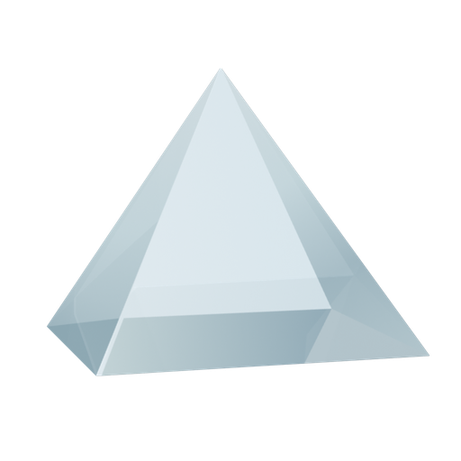
A quiet, fast browser for Mac. It blocks the junk, gets past censorship and puts idle tabs to sleep. No agent, no chatbot, nothing in the way.
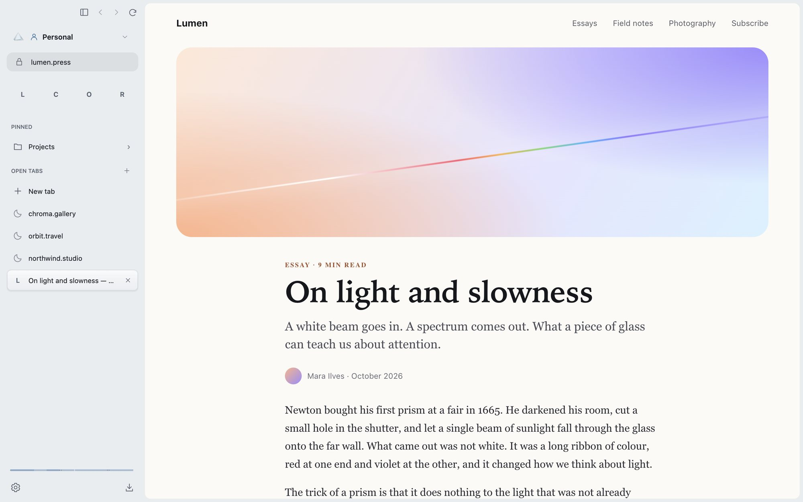
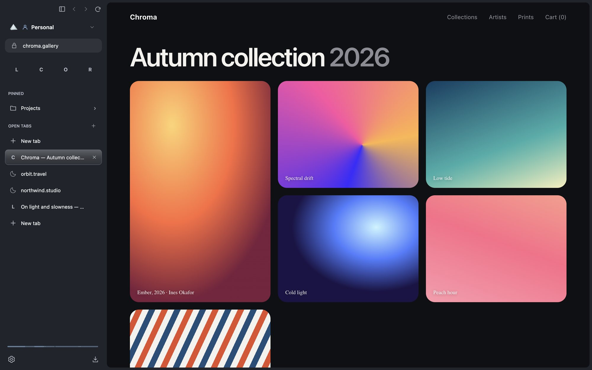
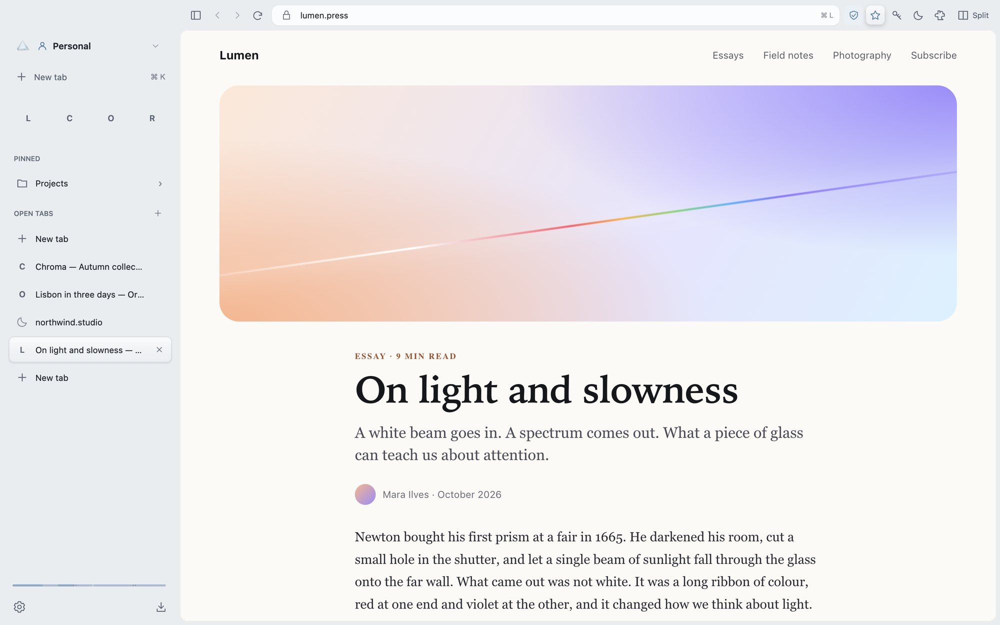
Real Prism windows. The address bar lives in the sidebar, or above the page if you prefer.
Prism Shield, Bypass censorship, Spectrum, sleeping tabs, Clear view, Lens, Beam, Chromium 152, Apple Silicon, GPL-3.0.
01One beam, seven colours
White light goes into a prism and leaves as a spectrum. Prism does the same with a browser: everything it does, spread out where you can see it.
Ads, trackers, cookie banners and the ads inside YouTube videos, gone before they load. Seventeen filter lists and uBlock Origin's page scripts, built in, with no extension running.
Open sites your network blocks. The helper ships inside Prism: use it in Private, for every site, or only the sites you choose. If it can't get through, the page falls back to your normal connection.
A thin band at the foot of the sidebar. Hover for a glance at your tabs then; click for your day in chapters, and bring a whole moment back. Kept only on your Mac, never in Private.
Tabs you aren't using really go to sleep, even the ones full of ad frames that keep other browsers awake. Pinned and favourite tabs stay ready until your Mac actually needs the memory.
One shortcut and there's nothing left but the page. Touch the window's left edge and the sidebar slides back.
Peek at a link in a floating glass window without losing your place. Keep it as a tab, or let it go.
One field for everything. Type an address, search, or jump to any open tab, setting or action.
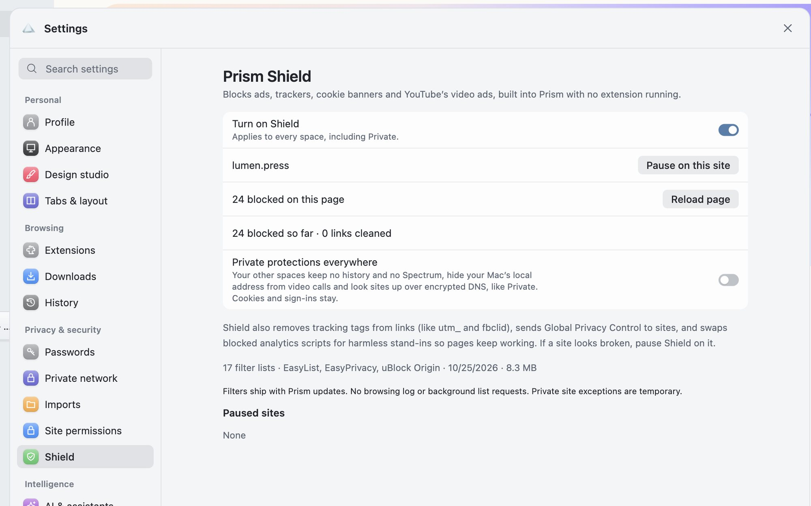
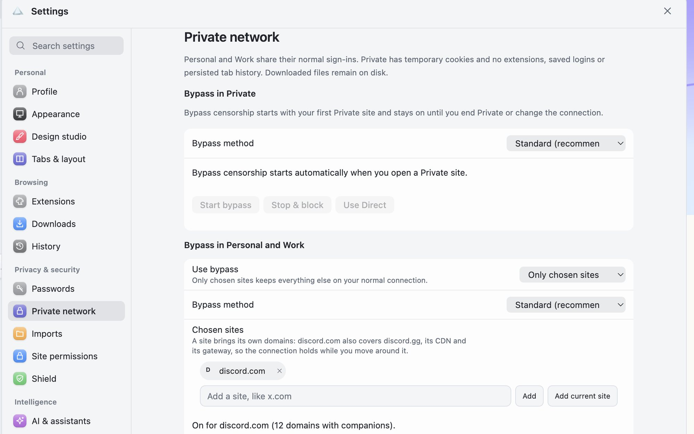
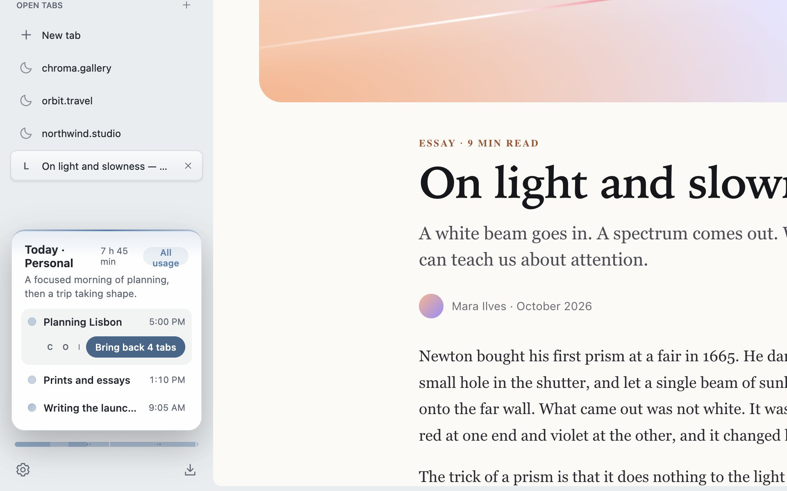
Ten busy sites, open together
60% less memory
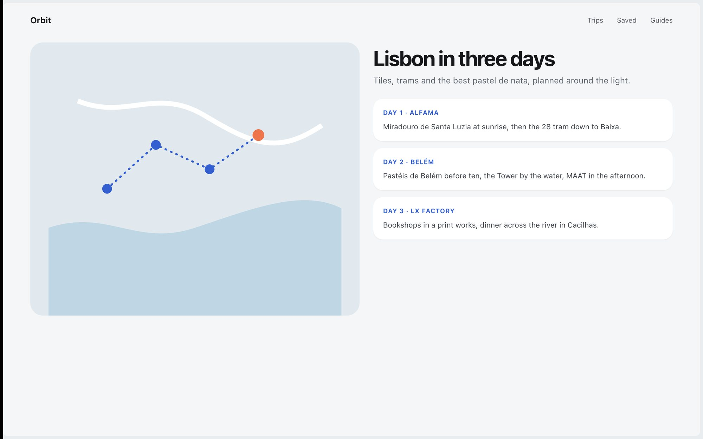
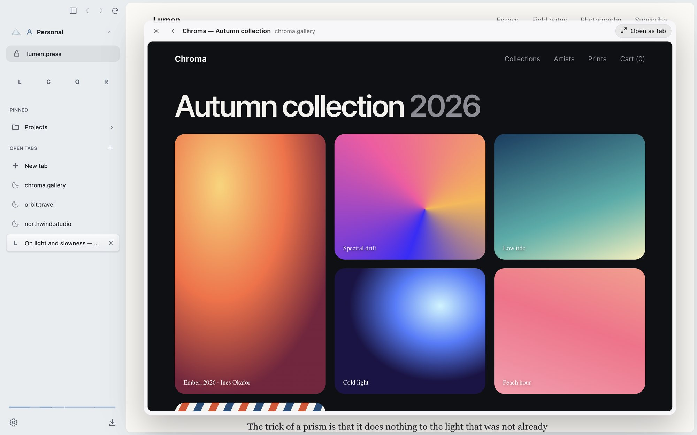
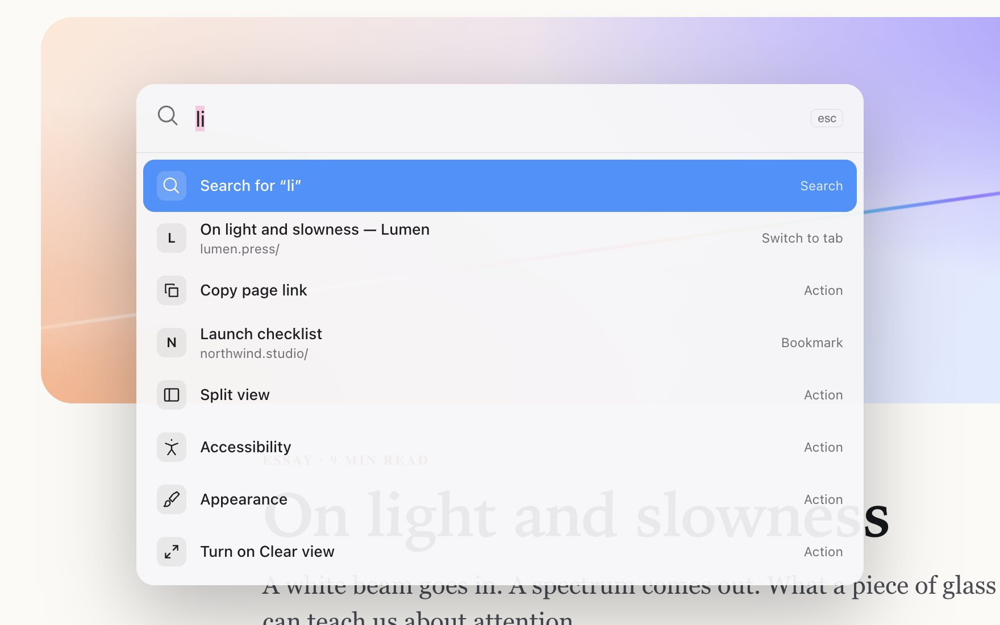
02Light by nature
Memory, ten busy sites
0.8GB
About 2 GB while they're busy, about 0.8 GB once they idle. Measured with ad-heavy pages, not a blank tab.
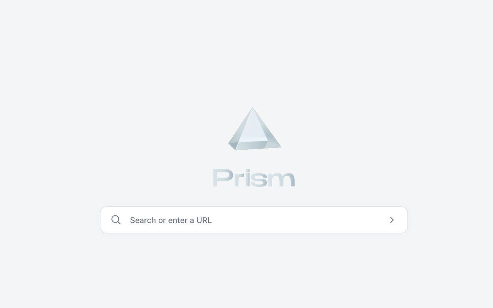
The new tab
No news feed, no sponsored tiles, no list of things you didn't ask for.
Engine
Chromium 152
Sites work as in Chrome, and so do most Chrome extensions. Prism checks for a newer Chromium every launch.
Updates
Quietly
New versions download in the background and install on the next launch, signed and checked.
Spaces
Up to 40
Each with its own tabs, symbol and colour. Swipe the sidebar to move between them.
Passwords
Touch ID
Logins, passkeys and cards stay on this Mac, locked with your Keychain and Touch ID.
03The identity
Every colour in Prism has a job. Red guards, orange gets through, yellow remembers. Pick a chip to see its feature.
04A note on AI
Here's the twist: most of Prism's code was written by AI, steered by one person with strong opinions. Building it that way made the AI browser playbook easy to see through. A browser should get out of the way, not get between you and the web.
A few small helpers, like naming Spectrum's chapters, stay quiet until you use them. They run with Apple Intelligence on your Mac, or with your own Claude key.
Follow the light.
Prism is a beta and isn't notarized yet. The first time, Control-click Prism in Applications and choose Open. How to install